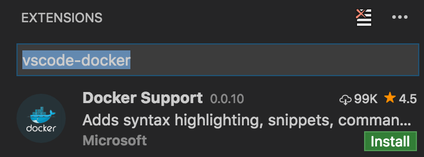
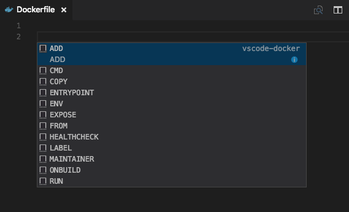
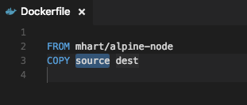
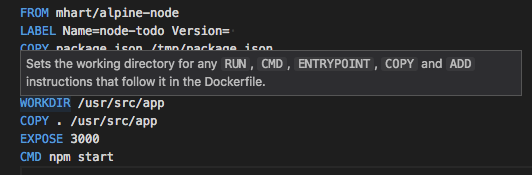
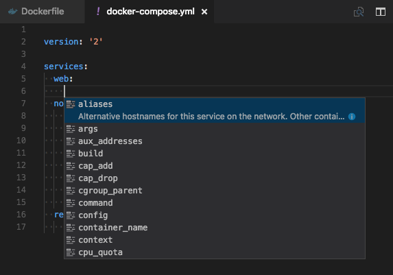
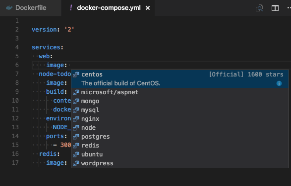
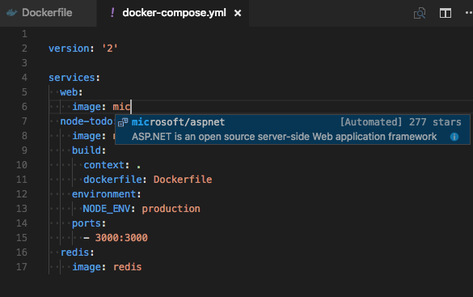
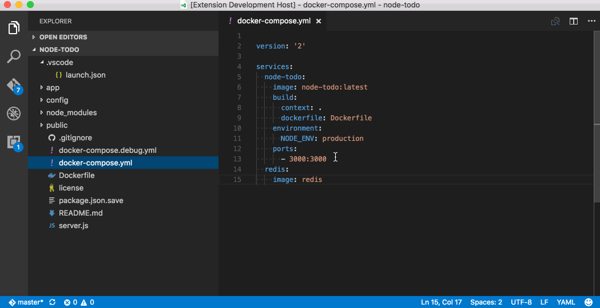
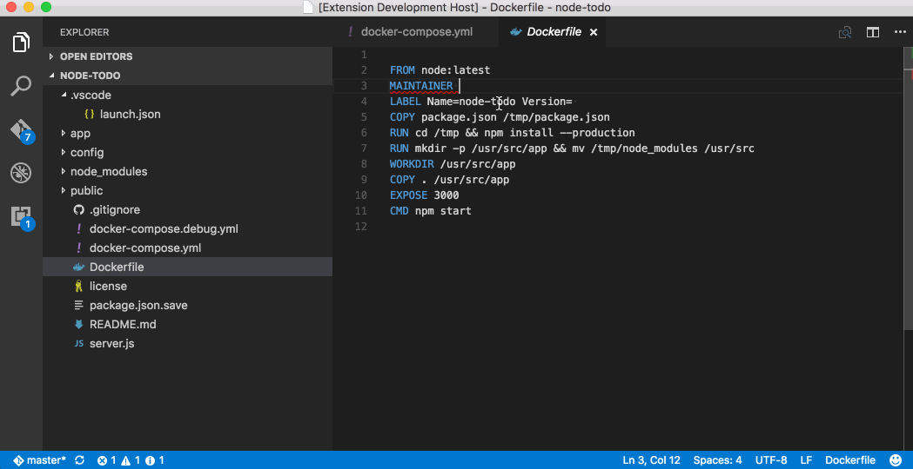

Working with Docker
Docker is a very popular container platform that lets you easily package, deploy, and consume applications and services. Whether you are a seasoned Docker developer or just getting started, Visual Studio Code makes it easy to author Dockerfile and docker-compose.yml files in your workspace.
Install the Docker extension
Docker support for VS Code is provided by an extension. To install the Docker extension, open the Extension Viewlet by pressing ⇧⌘X (Windows, Linux Ctrl+Shift+X) and search for vscode-docker to filter the results. Select the Docker Support extension.

While here, you can install many other extensions to make you more productive with VS Code.
Tip: The extensions are dynamically queried. Click on an extension tile to read the description and reviews to decide which extension is best for you. See more in the Marketplace.
Dockerfiles
With Docker, you can build images by specifying the step by step commands needed to build the image in a Dockerfile. A Dockerfile is just a text file that contains the build instructions.
VS Code understands the structure of Dockerfiles as well as the available set of instructions, meaning we can give you a great experience when authoring these files in the tool.
- Create a new file in your workspace named
Dockerfile Press ⌃Space (Windows, Linux Ctrl+Space) to bring up a list of snippets corresponding to valid
Dockerfilecommands
Press Tab to move between fields within the snippet. For example, with the
COPYsnippet you can fill in thesourceand then press Tab to move to thedestfield.
In addition to snippets for authoring your Dockerfile, Visual Studio Code will provide you with a description of any Docker command you hover over with the mouse. For example, when hovering over WORKDIR you will see the following.

For more information on Dockerfiles, check out Dockerfile best practices on docker.com.
Docker Compose
Docker Compose lets you define and run multi-container applications with Docker. You define what the shape of these containers look like with a file called docker-compose.yml.
Visual Studio Code’s experience for authoring docker-compose.yml is also very rich, providing IntelliSense for valid Docker compose directives and it will query Docker Hub for metadata on public Docker images.
- Create a new file in your workspace called
docker-compose.yml - Define a new service called
web: On the second line, bring up IntelliSense by pressing ⌃Space (Windows, Linux Ctrl+Space) to see a list of all valid compose directives.

For the
imagedirective, you can press ⌃Space (Windows, Linux Ctrl+Space) again and VS Code will query the Docker Hub index for public images.
VS Code will first show a list of popular images along with metadata such as the number of stars and description. If you continue typing VS Code will query the Docker Hub index for matching images, including searching public profiles. For example, searching for Microsoft will show you all the public Microsoft images.

Docker commands
Many of the most common Docker and docker-compose commands are built right into the Command Palette (⇧⌘P (Windows, Linux Ctrl+Shift+P)).

Dockerfile linting
You can enable linting of Dockerfile files through the docker.enableLinting setting. The extension uses the dockerfile_lint rules based linter to analyze the Dockerfile. You can provide your own customized rules file by using the docker.linterRuleFile setting. You can find more information on how to create rules files as well as sample rules files in the dockerfile_lint project.

Running commands on Linux
By default, Docker runs as the root user on Linux, requiring other users to access it with sudo. This extension does not assume root access, so you will need to create a Unix group called “docker” and add users to it. Instructions can be found here: Create a Docker group